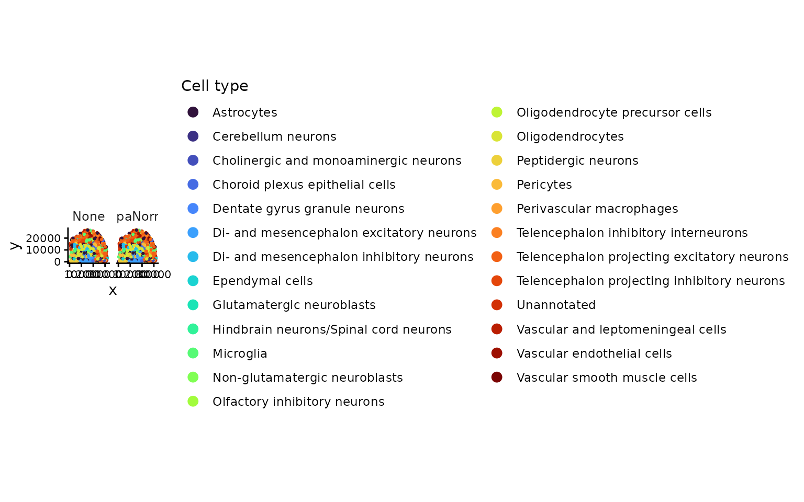
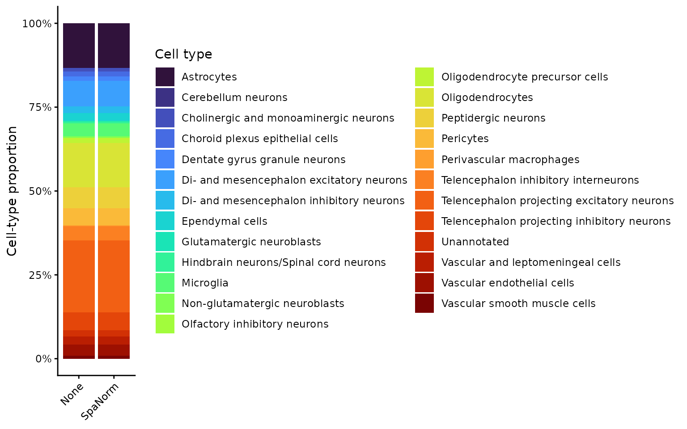
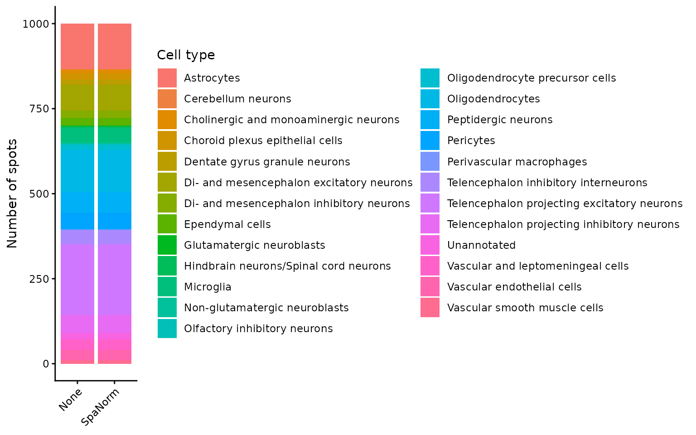
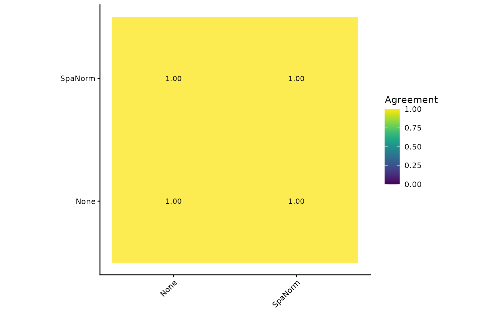
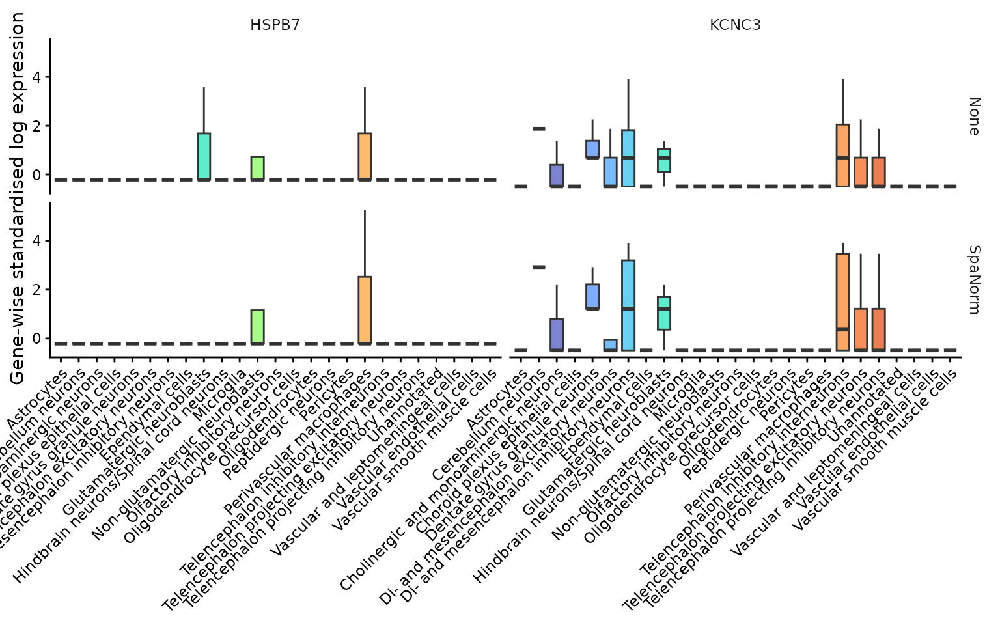
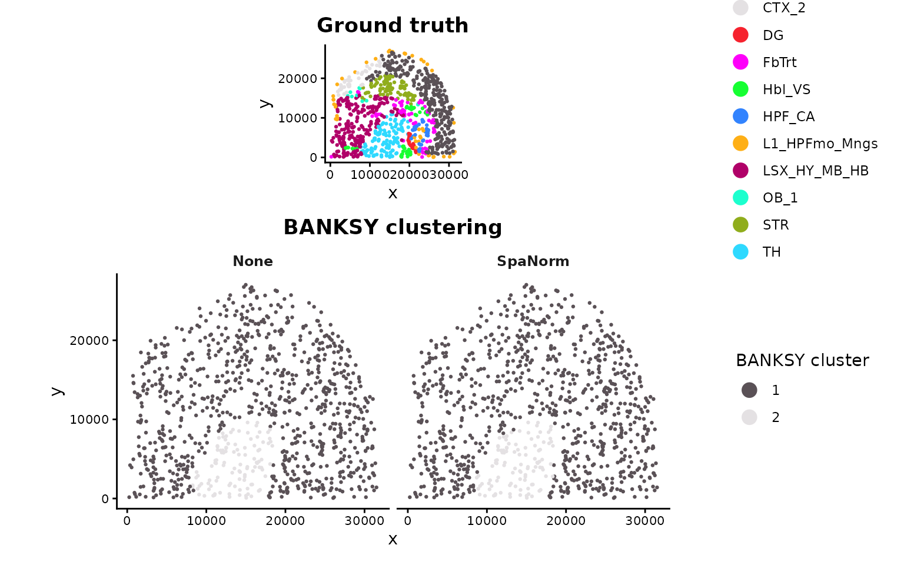
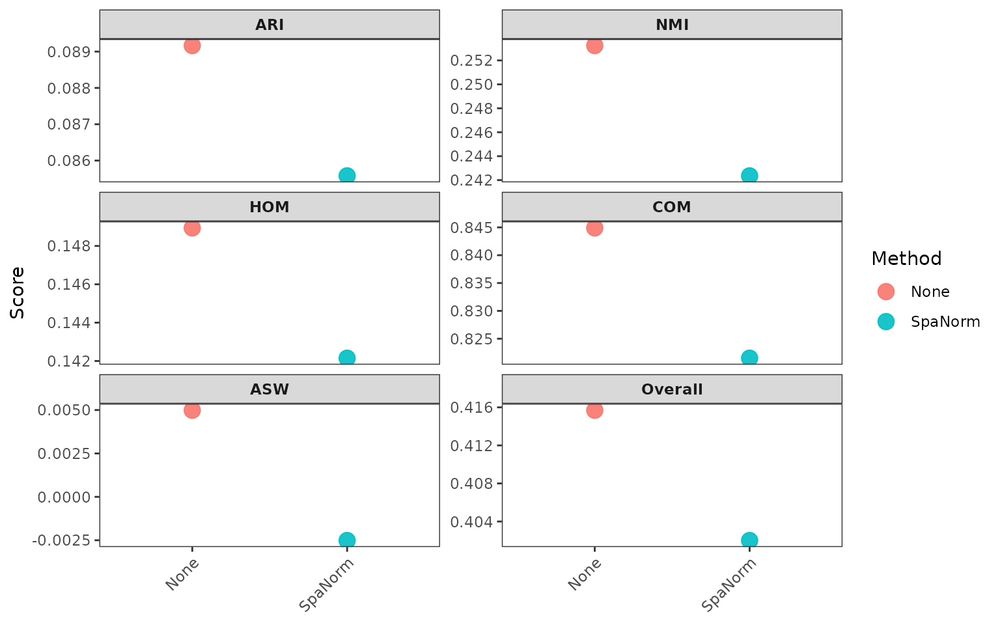
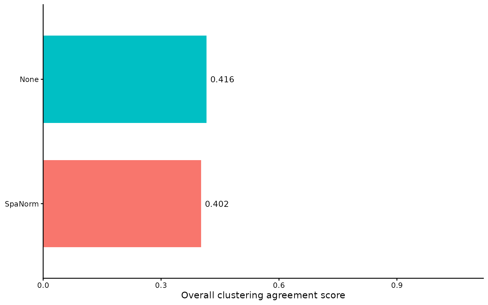
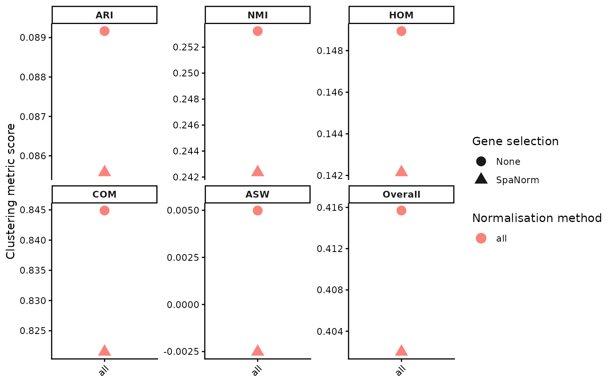

Cell-type annotation and spatial clustering with STBench
Source:vignettes/annotation-and-clustering.Rmd
annotation-and-clustering.RmdIntroduction
This vignette uses the cell-type labels already supplied in
norm_example, so an external SingleR reference is not
required.
Cell-type annotation
The example data include existing cell_type annotations.
We use these to demonstrate downstream comparisons without requiring an
external SingleR reference. In a full analysis,
run_annotation() can be used with an appropriate
reference.
annotated_norm <- norm
annotation_col <- "cell_type"Visualise spatial cell-type assignments
p_annotation <- plot_spatial_annotation(
norm_list = annotated_norm,
annotation_col = annotation_col,
method_order = NULL,
point_size = 0.5,
ncol = 2,
theme_name = "classic",
palette = "turbo"
)
p_annotation$plot
Compare cell-type composition
We examine relative proportions and absolute spot counts assigned to each cell type.
p_prop <- plot_celltype_proportion(
norm_list = annotated_norm,
annotation_col = annotation_col,
palette = "turbo",
show = "proportion",
theme_name = "classic"
)
p_prop$plot
p_count <- plot_celltype_proportion(
norm_list = annotated_norm,
annotation_col = annotation_col,
show = "count",
theme_name = "classic"
)
p_count$plot
Calculate and plot annotation agreement
Pairwise agreement measures the fraction of spots receiving the same label under two methods. It measures consistency, not accuracy against a known ground truth.
annotation_agreement <- calculate_annotation_agreement(
norm_list = annotated_norm,
annotation_col = annotation_col,
remove_na = TRUE
)
annotation_agreement
#> method1 method2 agreement n_compared
#> 1 None SpaNorm 1 944
p_agreement <- plot_annotation_agreement(
norm_list = annotated_norm,
annotation_col = annotation_col,
remove_na = TRUE,
show_values = TRUE,
digits = 2,
colour_option = "viridis",
theme_name = "classic"
)
p_agreement$plot
Marker investigations
Marker comparisons depend on the presence of biologically relevant genes. The following code demonstrates how to specify candidate markers when available.
p_marker <- plot_marker_expression(
norm_list = annotated_norm,
markers = head(rownames(annotated_norm[[1]]), 2),
annotation_col = "cell_type",
palette = "turbo"
)
p_marker$plot
BANKSY spatial clustering
BANKSY incorporates spatial neighbourhood information alongside gene expression to identify spatial domains. We execute clustering on the small example dataset.
banksy_norm <- run_banksy_individual(
norm_list = norm,
methods = names(norm),
assay_name = "logcounts",
cluster_col = "banksy_cluster",
k_geom = 15,
lambda = 0.8,
resolution = 0.2,
seed = 123
)Visualise and evaluate BANKSY clusters
These functions operate on the output of
run_banksy_individual() above.
p_banksy <- plot_spatial_clustering(
norm_list = banksy_norm,
cluster_col = "banksy_cluster",
ground_truth_col = "layer_guess",
show = "both",
methods = names(banksy_norm),
point_size = 0.5,
ncol = 2,
theme_name = "classic"
)
p_banksy$plot
metrics_df <- calculate_clustering_metrics(
norm_list = banksy_norm,
ground_truth_col = "layer_guess",
cluster_col = "banksy_cluster",
methods = names(banksy_norm)
)
metrics_df
#> method slice n ARI NMI HOM COM ASW
#> 1 None slice1 944 0.08916554 0.2532399 0.1489408 0.8449019 0.004987321
#> 2 SpaNorm slice1 944 0.08558020 0.2423588 0.1421474 0.8215048 -0.002514273
#> Overall n_asw ASW_sampled
#> 1 0.4156942 944 FALSE
#> 2 0.4020037 944 FALSE
p_metrics <- plot_clustering_metrics(
metrics_df = metrics_df,
metrics = c("ARI", "NMI", "HOM", "COM", "ASW", "Overall"),
ncol = 2,
scales = "free_y",
theme_name = "bw"
)
p_metrics$plot
ranking_df <- rank_normalization_methods(metrics_df = metrics_df)
ranking_df
#> Rank method Overall
#> 1 1 None 0.4156942
#> 2 2 SpaNorm 0.4020037
p_ranking <- plot_normalization_ranking(
ranking_df = ranking_df,
bar_width = 0.7,
label_size = 3.5,
theme_name = "classic"
)
p_ranking$plot
BANKSY with different gene-selection strategies
For a small example dataset, a selection size of 500 can exceed the number of available genes. For the small dataset, each selection strategy uses up to the available number of genes.
data(svg_example)
banksy_genes <- run_banksy_gene_selection(
norm_list = norm,
svg_list = svg_example,
gene_selection = "all",
assay_name = "logcounts",
k_geom = 15,
lambda = 0.8,
resolution = 0.2,
seed = 123
)
metrics_genes <- calculate_gene_selection_metrics(
banksy_list = banksy_genes,
ground_truth_col = "layer_guess"
)
p_genes <- plot_gene_selection_metrics(
metrics_df = metrics_genes,
ncol = 3,
scales = "free_y",
theme_name = "classic"
)
p_genes$plot
Session information
sessionInfo()
#> R version 4.6.2 (2026-10-29)
#> Platform: x86_64-pc-linux-gnu
#> Running under: Ubuntu 26.04.1 LTS
#>
#> Matrix products: default
#> BLAS: /usr/lib/x86_64-linux-gnu/openblas-pthread/libblas.so.3
#> LAPACK: /usr/lib/x86_64-linux-gnu/openblas-pthread/libopenblasp-r0.3.32.so; LAPACK version 3.12.0
#>
#> locale:
#> [1] LC_CTYPE=C.UTF-8 LC_NUMERIC=C LC_TIME=C.UTF-8
#> [4] LC_COLLATE=C.UTF-8 LC_MONETARY=C.UTF-8 LC_MESSAGES=C.UTF-8
#> [7] LC_PAPER=C.UTF-8 LC_NAME=C LC_ADDRESS=C
#> [10] LC_TELEPHONE=C LC_MEASUREMENT=C.UTF-8 LC_IDENTIFICATION=C
#>
#> time zone: UTC
#> tzcode source: system (glibc)
#>
#> attached base packages:
#> [1] stats graphics grDevices utils datasets methods base
#>
#> other attached packages:
#> [1] STBench_0.99.0
#>
#> loaded via a namespace (and not attached):
#> [1] tidyselect_1.2.1 viridisLite_0.4.3
#> [3] dplyr_1.2.1 farver_2.1.2
#> [5] viridis_0.6.5 S7_1.0.0
#> [7] fastmap_1.2.0 SingleCellExperiment_1.34.0
#> [9] digest_0.6.39 lifecycle_1.0.5
#> [11] cluster_2.1.8.3 magrittr_2.0.5
#> [13] dbscan_1.3.0 compiler_4.6.2
#> [15] rlang_1.3.0 sass_0.5.0
#> [17] tools_4.6.2 igraph_2.3.4
#> [19] yaml_2.3.12 data.table_1.18.6.1
#> [21] knitr_1.52 S4Arrays_1.12.1
#> [23] labeling_0.4.3 htmlwidgets_1.6.4
#> [25] mclust_6.1.4 scatterplot3d_0.3-45
#> [27] DelayedArray_0.38.2 RColorBrewer_1.1-3
#> [29] abind_1.4-8 withr_3.0.3
#> [31] purrr_1.2.2 BiocGenerics_0.58.1
#> [33] desc_1.4.3 grid_4.6.2
#> [35] stats4_4.6.2 colorspace_2.1-4
#> [37] aricode_1.1.0 ggplot2_4.0.4
#> [39] scales_1.4.0 SummarizedExperiment_1.42.0
#> [41] cli_3.6.6 rmarkdown_2.32
#> [43] ragg_1.5.2 leidenAlg_1.1.8
#> [45] generics_0.1.4 otel_0.3.0
#> [47] rjson_0.2.23 Banksy_1.8.1
#> [49] cachem_1.1.0 RcppHungarian_0.3
#> [51] parallel_4.6.2 XVector_0.52.0
#> [53] matrixStats_1.5.0 vctrs_0.7.3
#> [55] Matrix_1.7-6 jsonlite_2.0.0
#> [57] clevr_0.1.2 patchwork_1.3.2
#> [59] IRanges_2.46.0 S4Vectors_0.50.3
#> [61] irlba_2.4.1 systemfonts_1.3.3
#> [63] magick_2.9.1 tidyr_1.3.2
#> [65] jquerylib_0.1.4 glue_1.8.1
#> [67] pkgdown_2.2.1 uwot_0.2.5
#> [69] Polychrome_1.6.2 gtable_0.3.6
#> [71] GenomicRanges_1.64.0 tibble_3.3.1
#> [73] pillar_1.11.1 htmltools_0.5.9
#> [75] Seqinfo_1.2.0 R6_2.6.1
#> [77] textshaping_1.1.0 evaluate_1.0.5
#> [79] sccore_1.0.7 lattice_0.23-1
#> [81] Biobase_2.72.0 SpatialExperiment_1.22.0
#> [83] bslib_0.12.0 Rcpp_1.1.2
#> [85] gridExtra_2.3.1 SparseArray_1.12.3
#> [87] xfun_0.62 fs_2.1.0
#> [89] MatrixGenerics_1.24.0 pkgconfig_2.0.3